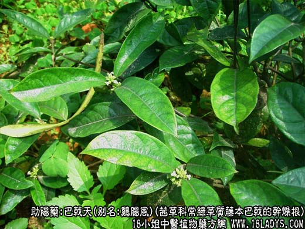
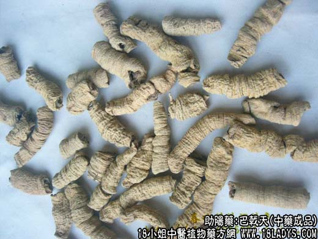
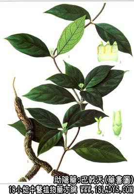

巴戟天为较常用中药。始载《神农本草经》，列为上品。
别名：巴戟、鸡肠风（广东、广西）。
来源：为茜草科多年生常绿草质藤本植物巴戟的干燥根。野生或栽培。
产地：主产于广东、广西，此外福建、江西亦有少量生产。
性状鉴别：巴戟天呈主扁圆知形，弯曲不直，皮部间断膨大或收缩，呈连珠状。长度不一，膨大处直径约1~2厘米。表面黄褐色，粗糙，有不规则纵皱及少数横皱。收缩处皮部多脱落露出木质心。质坚硬，皮部易削落，断面兰紫色木质心绳索状甚坚韧，淡黄褐色或灰紫色。气无，味甜微涩。以条大，肉质肥厚，木质心细小者为佳。
主要成分：含维生素闻c、糖类、树脂。
药理作用：温肾助阳,强筋骨，逐寒温。
炮制：甘草水煮片刻，去掉木质心，切段晒干。
性味：辛，微温。
归经：入肾经。
功能：补肾壮阳，强筋骨，祛风湿。
主治：阳痿，宫冷不孕，风寒湿痹，腰膝酸痛。脚气等症。
临床使用：与淫羊藿相似，但作用较缓。虽可用于治疗肾阳亏损而致的阳萎、腰痛等证，但实际上其强筋骨、逐寒湿之力更好，适宜于治寒湿困于下焦、腰膝诸症。
1、治肾阳虚寒而致的小便失禁、小便频数，取其有温肾作用，但需配肉苁蓉、补骨脂、核桃肉、覆盆子、芡实、茯苓、黄精等。
2、治腰膝风湿疼痛、腰气水肿，或肌肉萎缩无力，病程迁延日久而又有肾虚表现者，常配牛膝、续断、杜仲、山茱萸肉，方如巴戟去痹汤。此方试用于治进行性肌萎缩，从补肾健脾入手，也收到一定效果。
使用注意：阴虚火旺、小便不利、口舌干燥者不宜用。
用量：9~12g。
处方举例：巴戟去痹汤：巴戟9g，杜仲3g，牛膝9g，寄生15g，山萸肉9g，淮山药12g，水煎服。
注：福建、江西以同属植物羊角藤的根代戟使用，并运销省外。巴戟天根呈圆柱形，无显著的膨大及收缩，不呈连珠状，本质心粗而皮部肉甚薄。表面灰黄色，纵皱较浅。质坚硬，断面木质心灰黄色、皮部浅兰紫色或淡褐色。气无，味淡。效作如何尚待临床验证。
四川省以防已科木防已属植物防已的根作巴戟使用；又重庆地区以木通科植物白木通的根作巴戟使用，习称土巴戟。